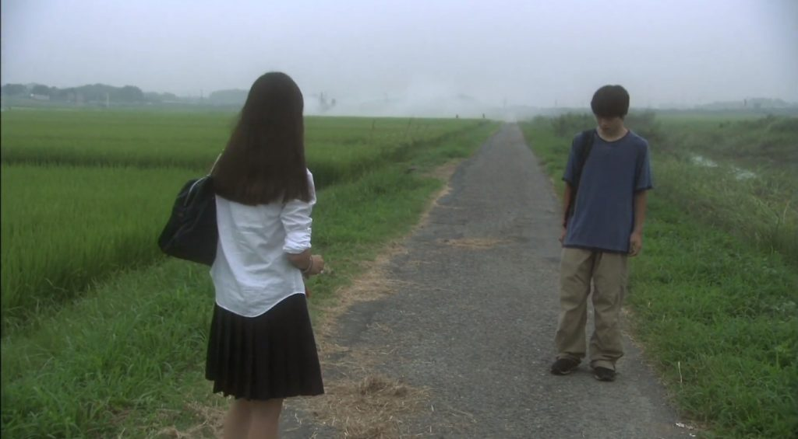

☆Gênero: Documentário/ Crime/ Thriller
☆lançamento: 06/10/2001
☆diretor(a): Shunji Iwai
☆Onde assistir? Prime video
☆classificação indicativa: L
☆Duração: 2h 37mn
avaliação:★★★★☆(4,0)
Sinopse
Um grupo de adolescentes japoneses vive imerso em uma cibercultura absurda que os faz ter uma visão irreal do mundo. Longe do bullying, de seus pais (que parecem viver em outro planeta) e de suas experiências negativas com o sexo, parece que sua única salvação é a adoração que sentem pela cantora pop Lily Chou Chou. Essa obsessão doentia os leva a estarem em contato uns com os outros por meio de um bate-papo na internet. Yuichi é um desses jovens, que conhece Blue Cat, outro hcio, para irem juntos a um show de Lily.